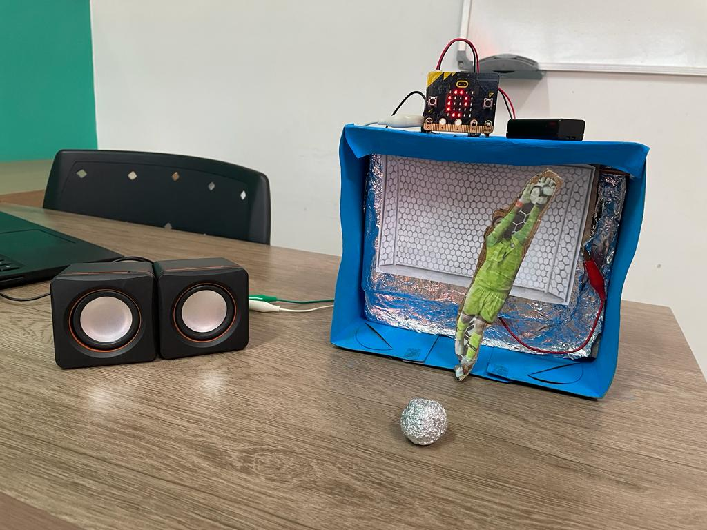
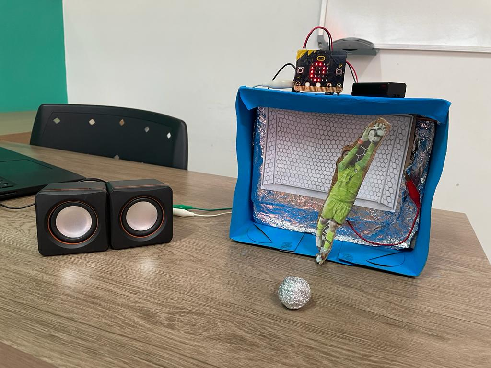

João Pedro, Theodoro Bertuzzo e Gabriel Nascimento se uniram para criar um animado Jogo de Pênaltis com o micro:bit. Neste projeto, os jogadores podem desfrutar da emoção das cobranças de pênaltis, evidenciando a criatividade e as habilidades técnicas inovadoras do grupo. A colaboração de todos com a programação e a montagem do projeto resultou em uma experiência divertida.

 
